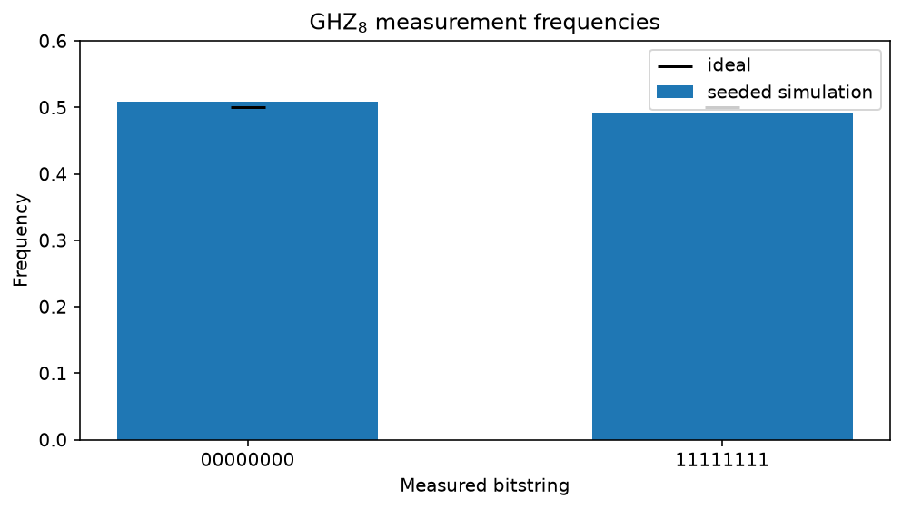

Entangle eight atoms into a GHZ state¶
-
Track
Neutral-atom physics
-
Downloads
This tutorial builds an eight-atom Greenberger-Horne-Zeilinger (GHZ) state on
AtomArraySimulator, fatqat's neutral-atom execution
target. It is a step up from the two-qubit Bell tutorial in two ways: the state
spans eight atoms instead of two, and the circuit runs on a backend whose
two-qubit-gate connectivity is reconfigured mid-circuit rather than fixed.
The GHZ state generalises the Bell state to \(n\) qubits,
Like the Bell state it cannot be factored into independent single-atom states.
Measuring all eight atoms yields only 00000000 or 11111111, each with
probability one half, so every atom's outcome is perfectly correlated with
every other. That correlation alone, however, is also produced by a classical
coin flip that sets all eight bits together; what makes the GHZ state quantum
is that the two branches are held in coherent superposition, with a definite
relative phase. We will confirm the correlations with sampled counts and then
confirm the coherence with exact expectation values.
The neutral-atom twist is connectivity. On this backend a CZ acts only on a
pair of atoms that is currently paired. The Pair /
Unpair operations update that pairing state as the
circuit runs. Physically, Pair stands for "move these two
atoms into a shared entangling zone" and Unpair for "move them apart
again" -- the atom transport that gives a reconfigurable neutral-atom processor
its programmable connectivity. We exploit exactly this to entangle atoms that
no fixed one-dimensional layout would place next to each other.
Imports and display settings¶
A fatqat.Program is the backend-independent circuit description.
Gate values live in fatqat.operations. NumPy helps us tabulate
expectation values, and Matplotlib supplies the captured runtime figure.
import matplotlib.pyplot as plt
import numpy as np
import fatqat as fq
import fatqat.operations as ops
np.set_printoptions(precision=3, suppress=True)
NUM_ATOMS = 8
The native gate set¶
The atom-array backend accepts only its native gates:
RX, RY,
RZ, and CZ. Convenience
gates such as H and CX are not native here, so we compile them by hand
-- exactly what a hardware-aware transpiler would do. A Hadamard equals
\(R_Z(\pi)\) followed by \(R_Y(\pi/2)\) up to an irrelevant global
phase, and a controlled-X is a Hadamard-conjugated CZ:
Writing these as small helpers keeps the circuit-building code below readable.
def native_h(program: fq.Program, target: int) -> None:
"""Hadamard in the native gate set: ``RZ(pi)`` then ``RY(pi/2)``."""
program.add(ops.RZ(np.pi), target)
program.add(ops.RY(np.pi / 2), target)
def native_cx(program: fq.Program, control: int, target: int) -> None:
"""``CX(control -> target)`` as ``H(target) CZ H(target)``.
The ``CZ`` in the middle is valid only while ``control`` and ``target`` are
currently paired; otherwise the backend raises
:class:`~fatqat.errors.BackendValidationError`.
"""
native_h(program, target)
program.add(ops.CZ, (control, target))
native_h(program, target)
A log-depth entangling tree¶
We could grow the GHZ state with a chain of seven controlled-X gates, atom
0 reaching each neighbour in turn. Instead we use a binary tree, which
reaches all eight atoms in only three layers and lets the gates within each
layer run in parallel on independent atom pairs:
layer 1: (0,4) 1 CX -- seeds the tree
layer 2: (0,2) || (4,6) 2 CX in parallel
layer 3: (0,1) || (2,3) || (4,5) || (6,7) 4 CX in parallel
Every pair inside a layer is disjoint, so those controlled-X gates act on separate atoms and could be executed simultaneously by the hardware.
CX_LAYERS: tuple[tuple[tuple[int, int], ...], ...] = (
((0, 4),),
((0, 2), (4, 6)),
((0, 1), (2, 3), (4, 5), (6, 7)),
)
for layer_index, layer in enumerate(CX_LAYERS, start=1):
print(f"layer {layer_index}: " + " || ".join(f"CX{pair}" for pair in layer))
Runtime result
layer 1: CX(0, 4)
layer 2: CX(0, 2) || CX(4, 6)
layer 3: CX(0, 1) || CX(2, 3) || CX(4, 5) || CX(6, 7)
Why the pairs must move between layers¶
The tree deliberately couples atoms that are far apart. Layer 1 entangles
atoms 0 and 4; layer 2 needs 0 with 2 and 4 with 6.
No fixed nearest-neighbour layout can offer all of those adjacencies at once.
This is where the reconfigurable connectivity earns its place. Just before a
layer's gates we Pair its atoms -- transporting
each pair into a shared entangling zone -- and just after we
Unpair them, freeing the atoms for the next layer's
regrouping. If we skipped this rearrangement, the layer-2 and layer-3 CZ
gates would target atoms that are not paired and the backend would reject the
program with BackendValidationError. The transport is
not incidental to the algorithm; it is the algorithm's wiring.
def build_ghz8_program(*, measure: bool = True) -> fq.Program:
"""Assemble the eight-atom GHZ program.
With ``measure=True`` every atom is read into a classical bit at the end,
which is what the counts experiment needs. With ``measure=False`` the
program has no classical register, leaving the coherent final state for the
:class:`~fatqat.Estimator` to interrogate.
"""
program = fq.Program(NUM_ATOMS, NUM_ATOMS if measure else 0)
# Sites start empty; load one |0> atom into each of the eight traps.
program.add(ops.Put, tuple(range(NUM_ATOMS)))
# Seed the tree: put atom 0 into |+>, the root the branches grow from.
native_h(program, 0)
for layer in CX_LAYERS:
for pair in layer: # transport the layer's atoms together
program.add(ops.Pair, pair)
for control, target in layer: # one parallel layer of CX = H CZ H
native_cx(program, control, target)
program.add(ops.Barrier, tuple(range(NUM_ATOMS))) # visual layer marker
for pair in layer: # move the pairs apart again
program.add(ops.Unpair, pair)
if measure:
program.measure_all()
return program
ghz_program = build_ghz8_program()
Sample the eight-atom experiment¶
We run the measured program on
AtomArraySimulator; its eight quantum
resources also determine the array size. A fixed seed keeps the numbers stable
across tutorial runs, while omitting it produces independent samples. Because
the circuit is noiseless, all 2000 shots land on one of the two GHZ branches
and no other bitstring appears.
shots = 2_000
backend = fq.simulator.AtomArraySimulator()
counts = (
backend.run(
ghz_program,
shots=shots,
simulation_config={"seed": 7},
)
.result()
.get_counts()
)
print("Counts:", counts)
Runtime result
Counts: {'00000000': 1017, '11111111': 983}
Only 00000000 and 11111111 occur, each in roughly half the shots. The
bars below show the observed frequencies against the ideal \(1/2\);
finite-shot sampling nudges each bar slightly off that line, while every
intermediate bitstring stays empty.
all_zero, all_one = "0" * NUM_ATOMS, "1" * NUM_ATOMS
observed = np.array([counts.get(all_zero, 0), counts.get(all_one, 0)]) / shots
figure, axis = plt.subplots(figsize=(7, 4))
positions = np.arange(2)
axis.bar(positions, observed, width=0.55, label="seeded simulation")
axis.scatter(positions, [0.5, 0.5], color="black", marker="_", s=350, label="ideal")
axis.set(
xticks=positions,
xticklabels=(all_zero, all_one),
xlabel="Measured bitstring",
ylabel="Frequency",
ylim=(0, 0.6),
title="GHZ$_8$ measurement frequencies",
)
axis.legend()
figure.tight_layout()
plt.show()
Runtime result

Correlated is not the same as coherent¶
The counts prove the eight atoms are perfectly correlated, but a classical
mixture -- an even coin flip between "all zero" and "all one" -- would give
the identical histogram. To see the quantum coherence we measure observables
the mixture and the superposition disagree on, using the exact
Estimator on the unmeasured state.
Two families pin down \(|\mathrm{GHZ}_8\rangle\). Each neighbour parity \(\langle Z_i Z_{i+1}\rangle = 1\) says adjacent atoms always agree -- something the classical mixture also satisfies. The global \(X\)-parity \(\langle X_0 X_1 \cdots X_7\rangle = 1\) is the discriminator: it equals \(+1\) only for the coherent superposition and averages to \(0\) for the mixture. Observing both confirms a true GHZ state.
zz_observables = []
for i in range(NUM_ATOMS - 1):
label = ["I"] * NUM_ATOMS
label[i] = label[i + 1] = "Z"
zz_observables.append(fq.Observable([("".join(label), 1.0)]))
x_parity = fq.Observable([("X" * NUM_ATOMS, 1.0)])
estimator = fq.Estimator(fq.simulator.AtomArraySimulator())
values = (
estimator.run(
build_ghz8_program(measure=False),
zz_observables + [x_parity],
)
.result()
.get_expectation()
)
for i, value in enumerate(values[:-1]):
print(f"<Z{i}Z{i + 1}> = {value:+.6f}")
print(f"<{'X' * NUM_ATOMS}> = {values[-1]:+.6f}")
Runtime result
<Z0Z1> = +1.000000
<Z1Z2> = +1.000000
<Z2Z3> = +1.000000
<Z3Z4> = +1.000000
<Z4Z5> = +1.000000
<Z5Z6> = +1.000000
<Z6Z7> = +1.000000
<XXXXXXXX> = +1.000000
Every witness returns \(+1\), including the global \(X\)-parity, so the state is the coherent GHZ superposition rather than a classical mixture that would merely reproduce its counts.
A cost of moving atoms around¶
Reconfigurable connectivity is not free: each transport step risks losing an
atom from its trap. We model that by attaching Loss to
the Pair and Unpair operations, which ejects an atom with some
probability whenever it is moved. Only this neutral-atom backend models atom
loss; a generic simulator rejects the same noise model.
A lost atom is not a |0> and not a |1>: it is gone, and reads out as
the erasure digit 2, distinct from either computational outcome. Any shot
whose bitstring contains a 2 therefore had at least one atom fall out
during transport.
noise = fq.NoiseModel()
noise.add(fq.noise.Loss(p=0.01), operation=ops.Pair)
noise.add(fq.noise.Loss(p=0.01), operation=ops.Unpair)
lossy_backend = fq.simulator.AtomArraySimulator(noise=noise)
lossy_counts = (
lossy_backend.run(
ghz_program,
shots=shots,
simulation_config={"seed": 7},
)
.result()
.get_counts()
)
lost_shots = sum(n for bitstring, n in lossy_counts.items() if "2" in bitstring)
print(f"{lost_shots}/{shots} shots lost at least one atom (a '2' in the readout)")
print("Most frequent outcomes under 1% loss per move:")
for bitstring, n in sorted(lossy_counts.items(), key=lambda kv: -kv[1])[:6]:
print(f" {bitstring}: {n}")
Runtime result
469/2000 shots lost at least one atom (a '2' in the readout)
Most frequent outcomes under 1% loss per move:
11111111: 799
00000000: 732
00002000: 48
20000000: 48
00200000: 30
00000020: 29
Takeaways and next steps¶
This tutorial assembled a genuine eight-atom GHZ state, verified its correlations from sampled counts and its coherence from exact expectation values, and saw how moving atoms to reconfigure connectivity both enables the log-depth entangling tree and introduces a realistic loss channel.
From here, try widening the tree to sixteen atoms by adding a fourth layer,
raising the loss probability to watch erasures grow, or intentionally
dropping the Pair / Unpair calls from one layer to see
AtomArraySimulator reject the first unpaired
CZ with BackendValidationError. Restore the
pairing before exploring physical loss: an unpaired gate is a program error,
while a gate skipped after atom loss is a per-shot physical effect. The
downloadable Python is generated from these Markdown cells, so the variations
can be made directly in runnable code.